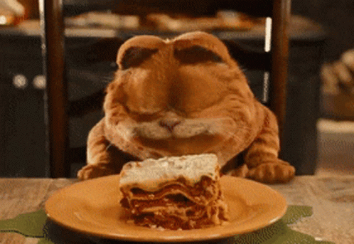

Lasagne

What kind of dish is lasagne?
Lasagne is a classic pasta dish. If you dont know Lasagne just give it a try.
Ingredients for the bechamel sauce
- 160 grams butter
- 160 grams flour
- 1600 ml milk
- Pepper
- Nutmeg
- Salt
Ingredients for the bolognese
- 800 grams minced meat
- Basel
- Olive oil
- Oregano
- Salt
- 16 table spoons tomato paste
- 2 cans hacked tomatos
- 4 small carottes
- 2 onions
- Pepper
- As much garlic as you like
- Tyme
Additional Ingredients
- Olive oil
- 400 grams grated cheese
- Lasagne sheets
Steps for the bolognese
- Dice onions,carots and garlic
- Heat oil in a pot and fry the minced meat.
- Add onions,carots and garlic and fry some more
- Add canned tomatos, tomato paste and all the spices
- Let the sauce simmer for 10 minutes
Steps for the bechamel sauce
- Melt the butter in a pot
- Add flour and immediatly stir
- While stirring slowly add milk
- Add more milk until you have a thick sauce
- Add nutmeg and pepper
Oven preparation
- Oil up the backing dish
- Add in this order: Pasta, bechamel sauce, bolognese
- Repeat step 2 until your backing dish is full and end on bechamel sauce
- Add cheese
- Backe at 180 degree celsius for about 30 minutes
- Enjoy your tasty lasagne just like Garfield would

Home